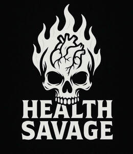

Trade Mark Journal No.2025/025 20 June 2025
UK00004213981 4 June 2025 (24,25)

- Class 24
- Fabrics for shirts; Shirt fabrics; Jersey fabrics for clothing; Fabrics for use in making jerseys.
- Class 25
- T-shirts; Tank-tops; Sport shirts; Sports shirts with short sleeves; Sweaters; Sweatpants; Tracksuits; Shorts; Clothing; Shorts [clothing]; Gloves [clothing]; Tops [clothing]; Shirts; Turtleneck shirts; Sweat shirts; Short-sleeve shirts; Polo shirts; Dress shirts; Long-sleeved shirts; Short-sleeved shirts; Knit shirts; Pique shirts; Open-necked shirts; Shirts for suits; Collared shirts; Sleep shirts; Football shirts; Corduroy shirts; Golf shirts; Soccer shirts; Maternity shirts; Camouflage shirts; Rugby shirts; Woven shirts; Short-sleeved T-shirts; Aloha shirts; Yoga shirts; Tee-shirts; Ramie shirts; Tennis shirts; Shirts and slips; Mock turtleneck shirts; Hooded sweat shirts; Night shirts; Sports shirts; Button-front aloha shirts; Casual shirts; Fishing shirts; Under shirts; Hunting shirts; Button down shirts; Moisture-wicking sports shirts; Shirt yokes; Yokes (Shirt -); Jerseys [clothing]; Undershirts; Printed t-shirts; American football shirts; Sleeveless jerseys; Polo sweaters; Sweatshirts; Bibs, sleeved, not of paper; Jackets (Stuff -) [clothing]; Stuff jackets [clothing]; Padded shirts for athletic use; Wristbands [clothing]; Undershirts for kimonos (juban); Shirt fronts; Hoodies; V-neck sweaters; Sleeveless jackets; Denims [clothing]; Collars [clothing]; Kerchiefs [clothing]; Jackets [clothing]; Nappy pants [clothing]; Sleeved jackets; Jerseys; Blouses; Trousers shorts; Headbands [clothing]; Headbands for clothing; Dress pants; Clothing for wear in wrestling games; Sweat pants; Polo knit tops; Sweat shorts; Jeans; Sweat jackets; Aprons [clothing]; Turtleneck sweaters; Leggings [trousers]; Stuff jackets; Clothes; Denim pants; Bibs, not of paper; Snap crotch shirts for infants and toddlers; Knit jackets; Quilted jackets [clothing]; Collars for dresses; Babies' pants [underwear]; Paper hats for use as clothing items; Denim jackets; Boy shorts [underwear]; Golf clothing, other than gloves; Pants; Bib shorts; Belts (Money -) [clothing]; Money belts [clothing]; Paper hats [clothing]; Bandanas; Hats (Paper -) [clothing]; Jackets being sports clothing; Waistcoats [vests]; Nightshirts; Mock turtleneck sweaters; Long sleeved vests; Playsuits [clothing]; Undershirts for kimonos (koshimaki); Undershirts for kimonos [koshimaki]; Braces [suspenders] for clothing / Suspenders [braces] for clothing; Gabardines [clothing]; Bottoms [clothing]; Party hats [clothing]; Roll necks [clothing]; Capes (clothing); Chaps (clothing).
Kieran Patrick Meegan